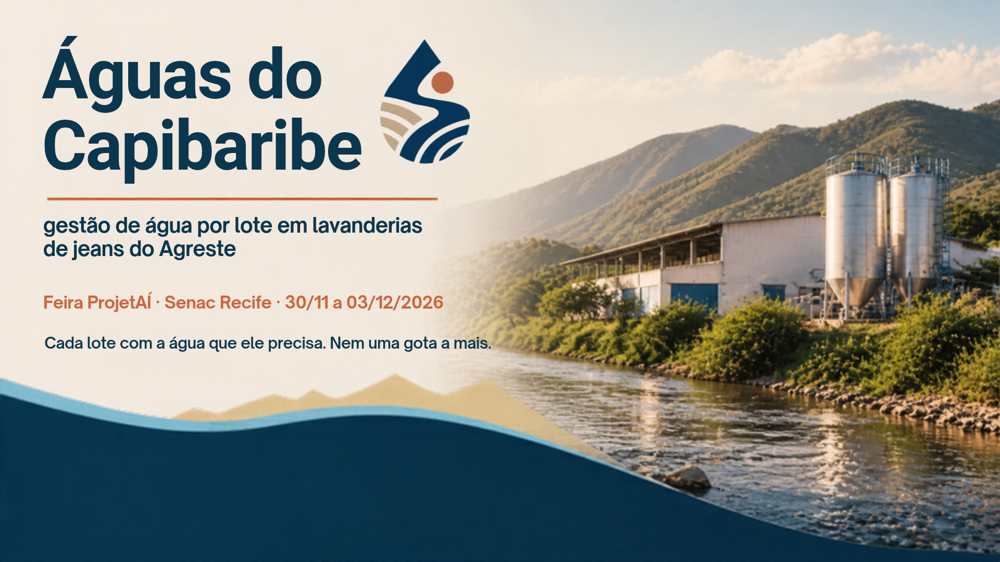
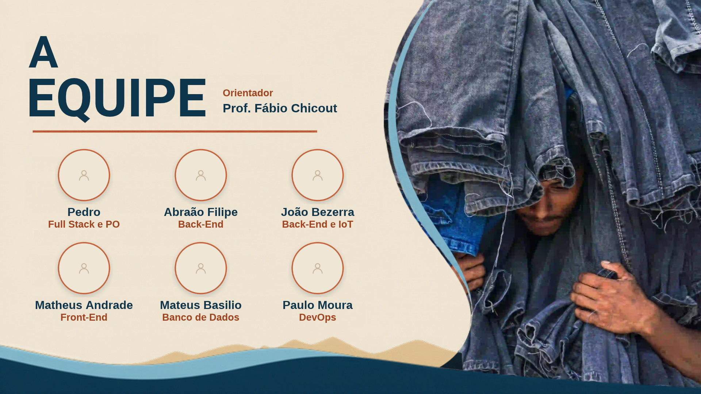
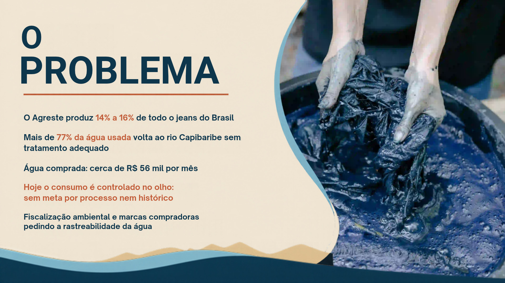
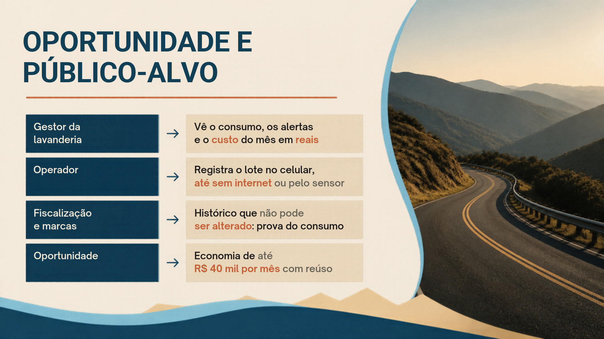
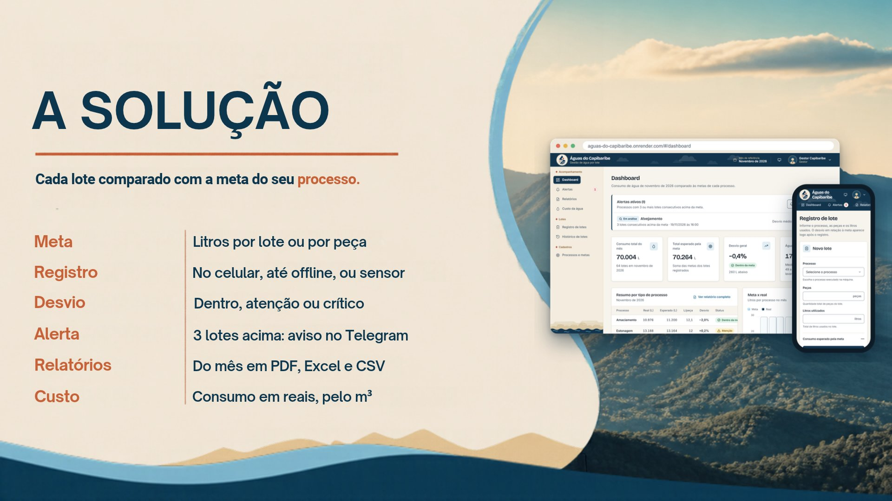
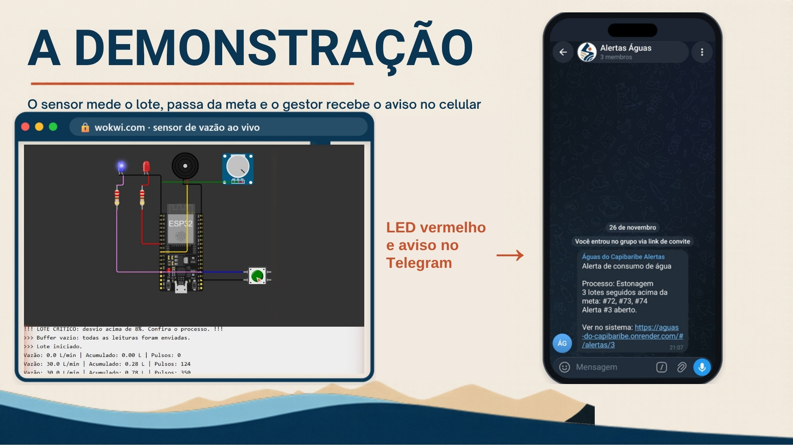
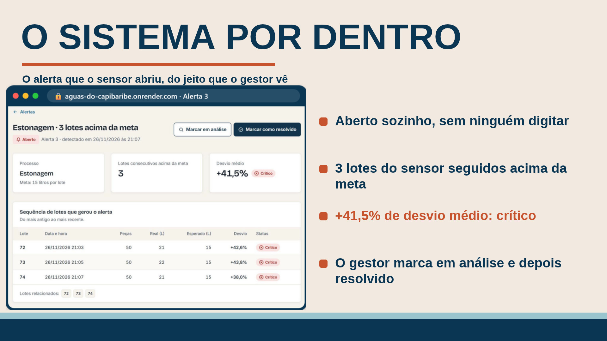
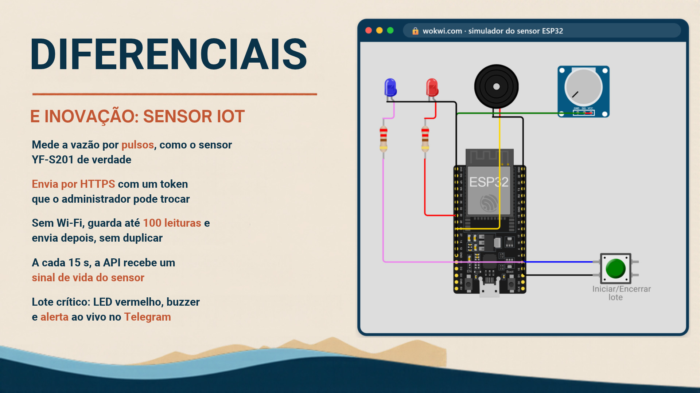
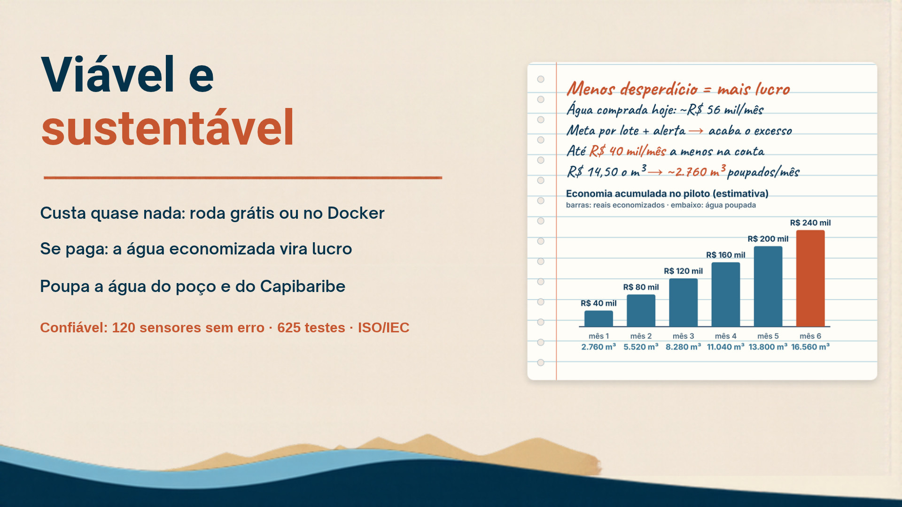
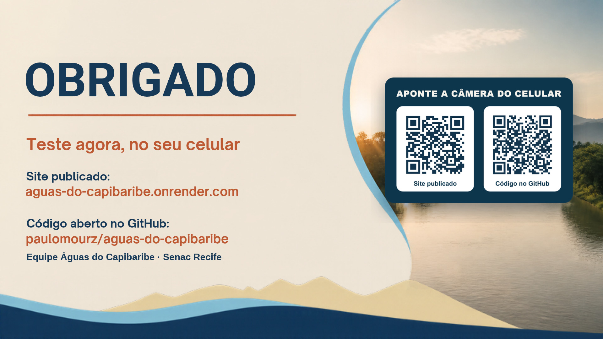

Águas do Capibaribe · apresentação na feira ProjetAÍ
Fala de 5 min 40 s (o limite é de 5 a 7 minutos), seguida de 3 minutos de perguntas da banca. Abaixo de cada slide está o cartão de apoio: o que dizer. Os tempos para o ensaio ficam no roteiro. A demonstração segue o roteiro de apresentação. Para projetar, use o PDF.

Slide 1 de 11 · O projeto
“Somos o Águas do Capibaribe. Ajudamos a lavanderia de jeans a saber quanta água cada lote gastou e se passou da meta. Cada lote com a água que ele precisa, nem uma gota a mais.”

Slide 2 de 11 · A equipe
Seis pessoas: Pedro (Full Stack e PO), Abraão Filipe (Back-End), João Bezerra (Back-End e IoT), Matheus Andrade (Front-End), Mateus Basilio (Banco de Dados) e Paulo Moura (DevOps), com orientação do Prof. Fábio Chicout.

Slide 3 de 11 · Problema
“O Agreste faz de 14% a 16% do jeans do Brasil. A água é cara, de poço e caminhão-pipa: cerca de R$ 56 mil por mês numa lavanderia média. E mais de 77% volta ao rio sem tratamento. Hoje ninguém sabe quanto cada processo gasta: é tudo no olho.” Os números são estimativas do Termo de Abertura.

Slide 4 de 11 · Oportunidade e público-alvo
“Nosso público são as lavanderias de jeans do Agreste. O gestor vê consumo, alertas e custo. O operador registra o lote no celular, até sem internet, ou o sensor registra por ele. Fiscalização e marcas ganham um histórico que não pode ser alterado. Com reúso, a economia pode passar de R$ 40 mil por mês.”

Slide 5 de 11 · Solução
“O gestor define a meta de cada processo. Cada lote é comparado com a meta na hora: dentro, atenção ou crítico. Três lotes seguidos acima da meta abrem um alerta, com aviso no Telegram. No fim do mês, o relatório sai em PDF, Excel ou CSV, e o custo aparece em reais.”

Slide 6 de 11 · Demonstração do protótipo
Tudo já aberto e logado como gestor. 1) No Wokwi, potenciômetro no máximo e botão verde: o lote começa. 2) Enquanto ele conta (uns 40 s), mostre no site o Dashboard do mês e o alerta em análise. 3) Botão de novo: LED vermelho, buzzer e o aviso no Telegram, no celular. 4) No site, F5: o lote no Histórico e o alerta novo. Ninguém registra lote de Estonagem antes do sensor.

Slide 7 de 11 · Diferenciais e inovação
“O lote pode ser registrado sozinho por um sensor de vazão no ESP32, que vocês viram no Wokwi falando com a API de verdade. Sem Wi-Fi, ele guarda as leituras e envia depois, sem duplicar. A cada 15 segundos manda um sinal de vida. E o site também funciona sem internet no celular.”

Slide 8 de 11 · Viabilidade e sustentabilidade
“Roda de graça no Render e no Neon, ou num computador com um comando do Docker. No teste de carga com o k6, aguentou 120 sensores sem nenhum erro. O código é aberto, tem mais de 500 testes, passou no SonarQube e está documentado nas normas ISO/IEC.”

Slide 9 de 11 · Impactos e resultados esperados
“Medir cada lote é o primeiro passo para gastar menos: com reúso, até R$ 40 mil por mês. O efluente fora da CONAMA 430, pH de 5 a 9, aparece na hora. O custo da água e do excesso sai em reais. E o histórico não muda: é prova para cliente e fiscalização.”
Slide 10 de 11 · Próximos passos
“Primeiro, um piloto numa lavanderia real com o sensor físico YF-S201. Depois, um sensor em cada máquina, previsão do consumo, aviso também no WhatsApp e um laudo ambiental para a CPRH.”

Slide 11 de 11 · Encerramento e chamada para ação
“Obrigado! Aponte a câmera para o QR code: o site está no ar e o código é aberto. Se você conhece uma lavanderia, fale com a gente para um piloto.” Depois, 3 minutos de perguntas da banca. Nenhuma conta é passada aos visitantes.